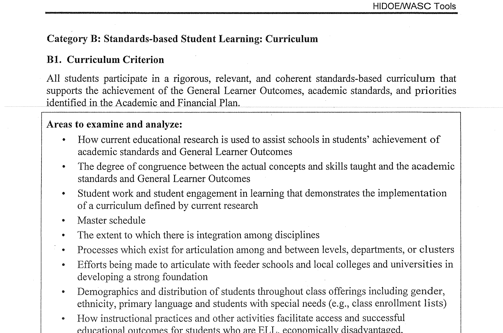

Accreditation Team Leader
Technology leader for my accreditation team at Castle High School.Overview

Accreditation is a 2-3 year process that all schools must go through every 10 years or
so to essentially make sure
they
are doing their job as a school. While I was a teacher at Castle High School, the time
came for us to go through
this
grueling process. The entire faculty and staff were split into about 5 teams to work on
each section of our
accreditation write up and I was chosen to be the technology leader for one of the
teams.
My Role and Responsibilities
The accreditation process was obviously not a new thing for the school and some of the
more seasoned teachers
had been
through many successful accreditations in their career. However, this was the first time
they did the entire
process
electronically instead of creating a giant binder hard copy. Therefore, my knowledge of
Google Drive and Google
Apps are
what got me appointed Tech Team Leader.
My main responsibilities included leading meetings, formatting the document, training
teachers on uploading &
linking
resources, and most importantly, maintaining the resource folders and making sure all
the links worked.
Reflection
This was overall one of the largest projects I've ever been a part of. Because the
project stretched over 2 school years, time management was a huge part of making sure
everything got done on time. One thing I found challenging was that I was the youngest
teacher and had never been
through the process before, but I still had act in a leadership position. Getting older,
more seasoned teachers to adhere to my deadlines, was not always the easiest and
required a lot of emails, reminders, and
sometimes begging on my part. One thing I enjoyed was getting to share my knowledge
about Google Docs with teachers
who don't usually use a lot of technology in their classrooms. I think I inspired some
of them to incorporate more technology in their every day classes, not just the
accreditation process. It was also
really exciting to be part of the first completely paperless accreditation portfolio.
Happily Ever After
In the end, our school passed with flying colors and I learned a lot about being a young
leader.